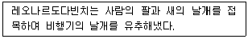
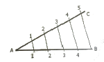
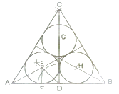
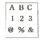
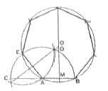
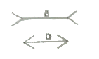
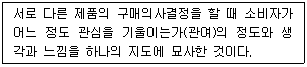
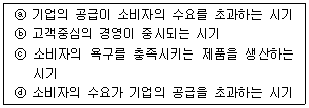

시각디자인기사 (2015-05-31 기출문제)
1과목: 시각디자인론
1. 기업의 마케팅 활동은 시장세분화의 목표시장의 선정에서 끝나는 것이 아니라 제품의 존재를 목표시장 사람들에게 알려 주어야 하는데 이러한 작업을 무엇이라고 하는가?
- Targeting
- Advertising
- Positioning
- PR
(정답률: 43%)

2. 현대디자인의 특징과 흐름을 설명한 것 중 틀린 것은?
- 세계의 디자인 흐름은 바우하우스의 영향으로 독일이 선도해 나아가고 있다.
- 대중문화의 폭발로 다양한 표현양식(팝아트, 옵아트)이 출현하였다.
- 디자인과 새로운 기술공학의 결과로 현대적 기능주의 양식으로서 유선형이 큰 주류를 이루었다.
- 현대의 기업들은 교역확대로 인한 기업 이미지 통일에 관심을 갖게 되었다.
(정답률: 55%)
3. 마케팅믹스의 '4P'에 해당하는 것은?
- Product, Power, Professional, Price
- Product, Position, Promotion, Price
- Product, Place, Promotion, Price
- Product, Place, Professional, Package
(정답률: 80%)
4. 전자출판을 가능하게 한 중요한 기술은?
- 옵셋 인쇄
- 광학 기술
- 사진제판 기술
- 포스트스크립트 기술
(정답률: 59%)
5. 창조적 아이디어 발상법으로 쓰이지 않는 것은?
- 입출력법(Input-Output)
- 브레인스토밍(Brain Storming)
- 시네틱스(Synectics)
- ST법(Sensitivity Training)
(정답률: 81%)
6. 문제 오류로 복원하지 못하였습니다. 정확한 내용을 아시는분 께서는 오류신고를 통하여 내용 작성 부탁 드립니다. 정답은 3번 입니다.
- 문제 오류로 복원하지 못하였습니다. 정확한 내용을 아시는분 께서는 오류신고를 통하여 내용 작성 부탁 드립니다. 정답은 3번 입니다.
- 문제 오류로 복원하지 못하였습니다. 정확한 내용을 아시는분 께서는 오류신고를 통하여 내용 작성 부탁 드립니다. 정답은 3번 입니다.
- 문제 오류로 복원하지 못하였습니다. 정확한 내용을 아시는분 께서는 오류신고를 통하여 내용 작성 부탁 드립니다. 정답은 3번 입니다.
- 문제 오류로 복원하지 못하였습니다. 정확한 내용을 아시는분 께서는 오류신고를 통하여 내용 작성 부탁 드립니다. 정답은 3번 입니다.
(정답률: 59%)
7. 잡지매체의 특성으로 설명이 가장 틀린 것은?
- 회람율이 높기 때문에 독자확보와 광고의 효용성이 높다.
- 정기구독자가 많음으로 해서 광고의 메시지나 인상효과가 오래 기억된다.
- 집행되는 광고의 크기와 면수의 증가에 따라 열독률이 커진다.
- 컬러 인쇄효과가 좋으므로 고가품 및 무드광고에 적합하다.
(정답률: 23%)
8. 환경 친화 디자인을 위한 기본적인 가이드라인을 제안한 것 중 가장 거리가 먼 것은?
- 재료를 최소화하며, 복합소재를 피한다.
- 적은 부품의 사용과 생산과정을 줄인다.
- 제작비를 감소하며, 단순화를 시도한다.
- 적은 부피로 하며, 무게를 줄인다.
(정답률: 61%)
9. 아이디어가 불현 듯 떠오르는 사고과정의 한 유형을 무엇이라 지칭하는가?
- 영감(Inspiration)
- 잠복 (Incubation)
- 분석(Analysis)
- 검증(Verification)
(정답률: 96%)
10. 발명으로 보호,장려하고 그 이용을 도모함으로써 기술의 발전을 촉진하여 산업발전에 이바지함을 목적으로 하는 법은?
- 저작권법
- 산업디자인진흥법
- 상표법
- 특허법
(정답률: 63%)
11. 아트 앤드 크라프트 운동이 주요 인물은?
- 피터 베렌스
- 윌리엄 모리스
- 윌터 그로피우스
- 헤르만 무테지우스
(정답률: 45%)
12. 다이어그램에 대한 설명과 관련이 없는 것은?
- 시간과 공간적으로 이해하기 쉽게 만든 교통 운행도
- 구조를 나타내는 분자구조, 배선도, 공정도
- 나뭇가지 모양으로 표현한 가족 가계보
- 인체를 세밀하게 표현한 인체 해부도
(정답률: 82%)
13. 디자인의 분류 중 2차원 디자인이 아닌 것은?
- 사인, 심볼디자인
- 타이포그래피, 벽지디자인
- 패키지디자인, 액세서리디자인
- 레터링디자인, 포토디자인
(정답률: 95%)
14. 편집디자인의 레이아웃 요소가 아닌 것은?
- line-up
- Saturation
- Format
- Margin
(정답률: 91%)
15. 디자인의 개념에 관한 설명 중 거리가 먼 것은?
- 설계하다, 계획하다 라는 의미를 갖는다.
- 사물의 재료, 기능, 구조에 조형성을 부여하는 종합적인 계획이다.
- 인간이 보고 즐길 수 있는 매우 아름다운 예술영역을 의미한다.
- 더욱 쾌적한 생활환경 형성에 기여하는 행위이다.
(정답률: 83%)
16. 실용신안법에 관한 설명으로 틀린 것은?
- 실용신안법은 실용적인 고안을 보호, 장려하고 그 이용을 도모함으로써 기술의 발전을 촉진하여 산업발전에 이바지함이다.
- 실용신안등록 출원의 경우 도면을 반드시 제출하여야 한다.
- 실용신안권의 존속기간은 설정등록일 부터 시작하여 출원일부터 20년 되는 날이 만료기간이다.
- 실용신안등록출원 저너에 국내 또는 국외에서 공지된 고안은 실용신안등록을 받을 수 없다.
(정답률: 67%)
17. C.I.P에서 응용디자인 시스템에 해당되는 것은?
- 패턴
- 로고타이프
- 보더라인
- 패키지
(정답률: 62%)
18. 제1차 세계대전 중 네덜란드에서 발행된 새로운 미술운동의 기관지 이름에서 연유된 것으로 유럽 추상미술의 지도적 역할을 했으며 대표적인 작가로 몬드리안이 있는 양식운동은?
- 신조형주의
- 표현주의
- 미래주의
- 구성주의
(정답률: 50%)
19. 디자인학과 졸업전시회에서 작품을 출품한 당사자인 학생들이 스스로 디자인을 평가했다면 이것은 어떤 평가 방법인가?
- 외부평가
- 내부평가
- 자체평가
- 단체평가
(정답률: 74%)
20. 보기는 시네틱스(Synetics)법의 기법 중 어디에 속하나?

- 의인적 유추
- 직접적 유추
- 상징적 유추
- 공상적 유추
(정답률: 90%)
2과목: 조형심리학
21. 다음 중 점이, 점증, 반복, 강조, 강약과 관련이 있는 조형원리는?
- 통일
- 균형
- 율동
- 조화
(정답률: 87%)
22. 예술의 기능에 대한 설명이 아닌 것은?
- 무엇보다 예술은 미를 산출한다.
- 예술은 물질과 정신에 형식을 부여한다.
- 예술은 재현, 재생이며, 표현이다.
- 예술은 미적 경험을 필요로 하지 않는다.
(정답률: 96%)
23. 접시, 조명기구, 찻잔 등 물건의 생산기법의 주된 운동으로서 회전운동이 있다. 이들의 형을 비스듬히 보았을 때의 시각적 형태는?
- 타원형
- 원형
- 구형
- 다각형
(정답률: 92%)
24. 게쉬탈트 심리학의 초기 창안자는?
- 깁슨
- 베르트하이머
- 루돌프아른하임
- 버린
(정답률: 62%)
25. 다음 평면도법은 무엇을 작도하기 위한 것인가?

- 직선의 2등분
- 각의 5등분
- 직선의 5등분
- 각의 평행선 긋기
(정답률: 43%)
26. 거리감을 표현하는데 유용한 방법이 아닌 것은?
- 대기원근법
- 직선원근법
- 과장원근법
- 다각원근법
(정답률: 41%)
27. 끊어지거나 불연속적인 윤곽선으로 된 형이 전체적 형으로 지각되는 법칙은?
- 정체성의 법칙
- 유동성의 원칙
- 고정성의 법칙
- 폐쇄성의 법칙
(정답률: 85%)
28. 같은 도면에서 2종류 이상의 선이 중복되었을 때 우선시 되는 선의 나열로 옳은 것은?
- 외형선 → 숨은선 → 절단선 → 중심선
- 중심선 → 외형선 → 숨은선 → 절단선
- 중심선 → 외형선 → 절단선 → 숨은선
- 외형선 → 중심선 → 숨은선 → 절단선
(정답률: 39%)
29. 형태의 구조를 설명하는 예시 중 원리가 다른 하나는?
- 달팽이
- 거미줄
- 타틀린의 탑
- 게리트 리트벨트의 적청 의자
(정답률: 69%)
30. 정3각형에 내접하는 3개의 연접원을 작도할 때 가장 먼저해야 할 항목은?

- ∠ADC를 이등분하여 교점 E를 구한다.,
- 정3각형의 각 꼭지점 A,B,C의 내각을 2등분한다.
- 선분 AE=선분 BH=선분 CG가 되게 한다.
- EF를 반지름으로 E,G,H를 중심으로 연접원을 그린다.
(정답률: 80%)
31. 착시현상에 포함되지 않는 것은?
- 길이의 착시
- 바탕과 도형의 착시
- 방향의 착시
- 무게의 착시
(정답률: 91%)
32. 그림과 같이 문자 숫자, 상징 등이 비슷한 것들끼리 그룹지어 보이는 지각 원리는?

- 근접성의 원리
- 유사성의 원리
- 연속성의 원리
- 공동운명의 원리
(정답률: 72%)
33. 다음 중 게슈탈트 심리학에서 말하는 지각체계화의 원칙에 해당되지 않는 것은?
- 근접성의 원칙
- 연속성의 원칙
- 투명성의 원칙
- 폐쇄성의 원칙
(정답률: 96%)
34. 규모와 비례에 대한 설명으로 틀린 것은?
- 규모는 '크기'를 말하며, 비례는 '상대적인 크기'를 뜻한다.
- 다른 요소에 비하여 커다란 규모는 시각적 강조를 나타낸다.
- 비례는 주로 정물화에만 국한된 것으로 무엇이 옳고 그른지에 대한 추상적 개념을 갖고 있다.
- 비례는 크기나 장단의 비를 말하며, 균형과 직접적인 관계가 있다.
(정답률: 96%)
35. 밝은 곳에서 어두운 곳으로 가면 처음에는 잘 안보이다가 나중에 점차 잘 보이게 되는 현상은?
- 명순응
- 암순응
- 착시
- 대비
(정답률: 92%)
36. 미학은 감성적 인식에 관한 학문이다. 미적가치에 관한 설명과 거리가 먼 것은?
- 미적 특성이라고도 부른다.
- 매력적인 것, 우아한 것, 고상한 것 등을 말한다.
- 인간의 실제적 행위에 의해 창조되고 예술속에 반영되어 진다.
- 인간에 의해 주위에서 발견되어질 수 없는 특성을 갖고 있다.
(정답률: 91%)
37. 그림의 작도법에 대한 설명이 틀린 것은?

- 선분 AB를 반지름으로 하는 원호를 그린다.
- 선분 AB의 연장선과의 교점 D를 얻는다.
- 선분 AB의 수직 2등분선과 원호와의 교점 D를 얻는다.
- 선분 AE의 수직 2등분선과 MD의 연장선과의 교점 O는 정7각형 외접원의 중심이 된다.
(정답률: 60%)
38. 그림과 같은 대칭 운용은?
- 이동
- 회전
- 경사
- 반사
(정답률: 96%)
39. 사람이 두 눈을 떴을 때 지각할 수 있는 대략적인 시각의 범위는?
- 상하 약 90도, 좌우 약 100도
- 상하 약 110도, 좌우 약 150도
- 상하 약 130도, 좌우 약 200도
- 상하 약 150도, 좌우 약 240도
(정답률: 60%)
40. 그림에 대한 설명으로 틀린 것은?

- 선분에서 일어나는 시각의 착시현상이다.
- 화살표 끝의 방위 때문에 일어나는 착시이다.
- 수평의 부분 a와 b 중에서 a가 길어 보인다.
- 헤링과 분트의 방향착시의 예이다.
(정답률: 90%)
3과목: 광고학
41. 브랜드 이미지가 의미하는 것은?
- 브랜드가 가지고 있는 추상적 이미지
- 브랜드의 조형적 구성요소에 대한 시각적 균형감
- 소비자들이 특정 브랜드에 가지고 있는 생각이나 느낌
- 소비자들이 특정 브랜드에 가지고 있는 거부감
(정답률: 83%)
42. 정확한 시장 분석을 위한 체크리스트 중 관련이 없는 것은?
- 시장의 크기와 성장성
- 제품의 품질과 포장
- 경쟁 상황
- 소비자 편익
(정답률: 55%)
43. 광고에 대한 소구대상의 반응을 분석하는 것, 즉 광고에 의해 구매 패턴이 어떻게 변화하는가를 측정하는 것을 무엇일고 하는가?
- 시장 반응분석
- 커뮤니케이션 분석
- 소비자 행동분석
- 시장세분화 분석
(정답률: 50%)
44. 커뮤니케이션 이론 중 매스미디어가 사람들에게 무엇을 하고 있느냐 하는 식의 종래의 입장에서 탈피, 대신 사람들이 매스미디어를 가지고 무엇을 하느냐는 입장에서 매스커뮤니케이션 현상을 연구하고자 하는 이론은?
- 선별효과이론
- 이용과 충족이론
- 의제설정기능이론
- 문화계발이론
(정답률: 48%)
45. 다음은 무엇을 설명한 것인가?

- 척도
- 관여도
- FCB Grid
- 인지도
(정답률: 27%)
46. 상품의 구매시점에서 점두 또는 점내에 설치된 광고로 윈도우, 포스터, 포장 등에 의한 광고는?
- 소매점 광고
- P.R 광고
- P.O.P 광고
- 옥외 광고
(정답률: 95%)
47. 인쇄매체광고에서 헤드라인의 가장 중요한 역할은?
- 소비자의 관심과 시선을 집중시키는 것
- 브랜드명과 회사를 밝히는 것
- 제품선능을 충실히 전달하는 것
- 제품의 특장점을 충실히 설명하는 것
(정답률: 97%)
48. 소비자들의 마음속에 제품이나 기업이 표적시장, 경쟁, 기업 능력에 우월성을 가지고 가장 유리한 위치에 있도록 제품 효익을 개발하고 커뮤니케이션하는 활동을 무엇이라고 하는가?
- USP 전략
- 브랜드이미지 전략
- 포지셔닝 전략
- SMP 전략
(정답률: 67%)
49. 광고의 마케팅 전략을 수립하는데 주목해야 할 요소로 가장 거리가 먼 것은?
- 상품의 성장단계
- 경쟁환경
- 소비자층
- 상품의 생산규모
(정답률: 86%)
50. 매스커뮤니케이션 과정의 요소가 아닌 것은?
- 제품생산라인
- 전달자
- 매체
- 수용자
(정답률: 81%)
51. 통합 마케팅 커뮤니케이션(IMC)의 개념과 가장 관계없는 것은?
- SP
- PR
- PC
- DM
(정답률: 66%)
52. 다음은 각 시대의 마케팅관리 철학의 특징을 나타낸 것이다. 마케팅관리 철학의 변화를 시대 순으로 올바르게 나열된 것은?

- ⓓⓐⓑⓒ
- ⓐⓓⓒⓑ
- ⓓⓐⓒⓑ
- ⓓⓒⓐⓑ
(정답률: 62%)
53. 광고카피의 구성요소에 대한 설명 중 옳지 않은 것은?
- 헤드라인은 독자를 바디카피로 자연스럽게 유도하는 기능을 달성할 수 있어야 한다.
- 헤드라인의 역할을 보완하기 위해서 서브헤드라인을 사용하기도 한다.
- 슬로건은 기업명이나 상품명 등에서 다른 회사와의 차별화를 꾀하고 기업의 이미지나 제품의 특성 등을 나타나개 위하여 특별히 디자인된 문자의 결합체를 말한다.
- 바디카피의 구성은 문장의 길고 짧음을 관계없이 일반적으로 도입, 중간, 결말 등으로 구성되어 있고 이중에서 어느 부분이 생략되어 나타날 수도 있다.
(정답률: 56%)
54. 같은 상표의 반복구입, 구입회수의 비율이 높을수록 그 제품에 대한 충실도가 높다고 할 수 있③ 이를 지칭하는 것은 무엇인가?
- 브랜드 셰어(brand share)
- 브랜드 정책(brand policy)
- 브랜드 로열티(brand loyalty)
- 브랜드 리더(brand leader)
(정답률: 87%)
55. 커뮤니케이션의 일반적인 과정인 "누가, 누구에게, 어떤 경로를 통하여, 어떤 효과를 얻고자, 무엇을 말하는가" 라는 요소 중에서 "무엇을"에 해당하는 것은?
- 매체
- 메시지
- 수용자
- 상품
(정답률: 85%)
56. 1960년대 데이비드 오길비가 주장한 전략으로 제품의 개성을 창조하여 좋은 이미지를 심어주고 동일한 이미지를 지속적으로 유지하며 가능한 고급 이미지를 유지하는 크리에이티브 전략을 무엇이라고 하는가?
- 포지셔닝 전략
- 브랜드이미지 전략
- SMP 전략
- USP 전략
(정답률: 53%)
57. 광고 크리에이티브 전략이 아닌 것은?
- 마케팅전략을 토대로 수립되어야 한다.
- 마케팅 전략의 상위개념이다.
- 소비자에게 전달해야 할 핵심적인 메시지이다.
- 전략은 브리프로 문서화되어야 한다.
(정답률: 70%)
58. 다음 중 해외 주요광고상이 아닌 것은?
- CLIO
- MIFF
- CANNES
- NEW YORK FESTIVALS
(정답률: 18%)
59. 광고표현에서 시즐효과(Sizzle Effect)와 다른 것은?
- 고기 구울 때 지글지글한는 소리
- 술을 마실 때 꿀꺽꿀꺽하는 소리
- 자동차가 달릴 때 나난 덜덜거리를 소리
- 콜라를 따를 때 튀는 물방을 소리
(정답률: 90%)
60. 유머소구를 사용할 때 고려사항이 아닌 것은?
- 유머가 광고와 조화를 이루어야 한다.
- 성인을 대상으로 하는 제품에는 부적합하다.
- 유머는 수용자가 이해할 수 있어야 한다.
- 상표와 관련성이 높아야 한다.
(정답률: 92%)
4과목: 색채학
61. 우리 눈에서 무채색의 지각뿐 아니라 유채색의 지각도 함께 일으키는 능력은 어디서 이루어지는가?
- 추상체
- 간상체
- 수정체
- 홍채
(정답률: 67%)
62. 디지털 색채의 유형 중 RGB 형식에 대한 설명으로 옳은 것은?
- 인쇄물이나 그림과 같이 컬러 재색 매체에 사용된다.
- 3가지 기본색인 빨강(red), 초록(green), 파랑(blue)을 모두 100%씩 혼합하면 검은색이 된다.
- 감법혼색으로 2차색은 원색보다 어두워진다.
- 컴퓨터 화면의 스크린은 24비트 색배열 조정장치를 사용할 경우 최대 약 1677만 가지의 색을 만들어 낼 수 있다.
(정답률: 96%)
63. 오스트발트 색채조화에서 gc - lg - pl의 기호는 어떤 조화에 해당하는가?
- 등백계열조화
- 등흑계열조화
- 등순계열조화
- 무채색의 조화
(정답률: 40%)
64. 배색에 대한 설명으로 틀린 것은?
- 화려하고 강렬한 느낌을 위해서는 색상차를 크게 하여 배색한다.
- 채도차가 큰 배색은 면적을 조절하여 안정감을 주어야 한다.
- 유사색상 배색 시에는 명도차, 채도차를 비슷하게 하여 조화되게 한다.
- 명쾌한 배색이 되기 위해서는 명도차를 크게 하여 배색한다.
(정답률: 32%)
65. 오스트발트 색체계에 관한 설명으로 틀린 것은?
- 노랑을 기준으로 전체 24색상으로 이루어져 있다.
- 톤은 무채색을 제외하고 각 색상 당 28색상으로 이루어져 있다.
- 원래 색채의 배색을 위한 조화를 목적으로 제작되었다.
- 색채조화매뉴얼(CHM)에는 모두 40색상으로 구성된다.
(정답률: 48%)
66. 2개 이상의 색을 혼합할 때 혼합되는 색의 수가 많을수록 명도가 높아지는 경우의 혼합은?
- 감산혼합
- 중간혼합
- 병치혼합
- 가산혼합
(정답률: 78%)
67. 감법혼색으로 틀린 것은?
- magenta + yellow = red
- cyan + magenta = blue
- yellow + cyan = green
- yellow + blue = white
(정답률: 92%)
68. 먼셀 색체계에서 색상기호 앞에 붙는 숫자로 각 색상의 대표 색상을 의미하는 숫자는?
- 2
- 5
- 8
- 3
(정답률: 86%)
69. 맥스웰 디스크(Maxwell's Disk)와 관계가 있는 것은?
- 병치혼합
- 회전혼합
- 감산혼합
- 색료혼합
(정답률: 45%)
70. 잔상에 관한 설명으로 잘못된 것은?
- 시신경이나 뇌의 이상으로 원래의 자극과 다른 감각을 일으키는 현상이다.
- 어떤 자극에 의해 원자극과 동질 또는 이질의 감각경험을 일으키는 현상이다.
- 망막의 흥분 상태의 지속성에 기인하는 현상이다.
- 충동이 시신경에 발한 그대로 계속되고 있는 결과이다.
(정답률: 72%)
71. JPG와 GIF의 장점만을 가진 포맷으로 트루컬러를 지원하고 비손실 압축을 사용하여 이미지 변형 없이 원래 이미지를 웹상에 그대로 표현할 수 있는 포맷형식은?
- PCX
- BMP
- PNG
(정답률: 64%)
72. 먼셀 색체계의 색표기 방법 중 명도가 가장 높은 색은?
- 2.5R 2/8
- 10R 9/1
- 5R 4/14
- 7.5Y 7/12
(정답률: 96%)
73. 색채계획의 과정에서 색채 심리 분석에 해당하지 않는 것은?
- 색채 이미지 측정
- 유행 이미지 측정
- 상품 이미지 측정
- 경영 이미지 측정
(정답률: 78%)
74. 대비현상과는 달리 인접된 색과 닮아 보이는 현상은?
- 잔상현상
- 퇴색현상
- 동화현상
- 연상감정
(정답률: 100%)
75. 물체색에 대한 설명 중 틀린 것은?
- 빛을 대부분 반사시키는 흰색이 된다.
- 빛을 완전히 흡수하면 이상적인 검정색이 된다.
- 빛의 일부는 반사하고 일부는 흡수하면 회색이 된다.
- 빛의 반사율은 0% ~ 100%가 현실적으로 존재한다.
(정답률: 84%)
76. 헤링의 4원색이 아닌 것은?
- Blue
- Yellow
- Purple
- Green
(정답률: 79%)
77. 분광광도계를 이용하여 색편의 분광반사율을 측정했을 때 가장 정확하게 색좌표가 계산되는 색체계는?
- Munsell 색체계
- Hering 색체계
- CIE 색체계
- Ostwald 색체계
(정답률: 79%)
78. 색채조화의 공통 원리가 아닌 것은?
- 질서의 원리
- 유사성의 원리
- 친근성의 원리
- 혼합의 원리
(정답률: 90%)
79. 스피드감을 내는 자동차의 배색으로 가장 적합한 것은?
- 저명도의 장파장색
- 중명도의 단파장색
- 고명도의 장파장색
- 고명도의 단파장색
(정답률: 85%)
80. 채도에 관한 설명 중 틀린 것은?
- 색이 순수할수록 채도가 높고, 탁하거나 흐릴수록 채도가 낮다.
- 무채색이 포함되지 않은 색이 채도가 가장 높고 이를 순색이라 한다.
- 순색에 흰색을 섞는 양이 많아질수록 채도는 높아진다.
- 무채색은 채도가 없다.
(정답률: 81%)
5과목: 사진 및 인쇄제판론
81. 가시광선의 파장역으로 옳은 것은?
- 400 ‾ 820nm
- 500 ‾ 780nm
- 380 ‾ 780nm
- 200 ‾ 700nm
(정답률: 91%)
82. 인쇄물의 표면 가공 처리의 기능과 목적이 아닌 것은?
- 인쇄물에 광택을 준다.
- 퇴색을 방지한다.
- 내구성, 장식 효과를 높인다.
- 내약품성을 저하시킨다.
(정답률: 96%)
83. 필름 현상 시 콘트라스트가 높아지는 요인과 가장 거리가 먼 것은?
- 현상액의 농도가 진할 때
- 현상온도가 높을 때
- 현상시간이 길 때
- 교반을 하지 않고 현상온도가 낮을 때
(정답률: 69%)
84. 광고 촬영 시 조명의 효과나 구도, 노출 등을 즉석에서 확인하기 위하여 본 촬영에 앞서 시험 촬영에 쓰는 인스턴트 필름을 무엇이라고 하는가?
- 폴라로이드 필름
- 슬라이드 필름
- 쉬트 필름
- 대형 필름
(정답률: 87%)
85. 촬영용 흑백 네거티브 필름의 감색성은?
- 청감색성
- 정색성
- 전정색성
- 적외선
(정답률: 28%)
86. 강한 광선 조건에서 매우 빠른 감도의 필름을 사용할 때 또는 느린 셔터로 촬영하기를 원할 때 사용하는 필터는?
- FL 필터
- ND 필터
- UV 필터
- RED 필터
(정답률: 45%)
87. 다음 중에서 카메라 렌즈를 극던적으로 조였을 때 해상력이 떨어지게 되는 가장 큰 이유는?
- 빛의 회절
- 빛의 간섭
- 빛의 굴절
- 빛의 반사, 흡수
(정답률: 67%)
88. 사진 촬영 시 적정 노출이 T=1/60초, F=5.6이다. 시간을 변경했을 때 셔터속도와 조리개 수치로 옳은 것은?
- 1/125초, F/4
- 1/30초, F/2.8
- 1/125초, F/16
- 1/30초, F/1.4
(정답률: 50%)
89. 인쇄 제판법의 종류 중 감광액이 미리 칠해져 나온 판은?
- 난백판
- PS판
- 평오목판
- 와이프온판
(정답률: 78%)
90. 데이라이트 타입 필름으로 실내촬영 시 일광의 색온도와 가장 가까워서 원색 재현이 가능한 광원은?
- 할로겐 전구
- 플러드 조명, 형광등
- 가정용 백열전구
- 전자플래시
(정답률: 43%)
91. 다음 중 현상약의 주성분이 아닌 것은?
- 메톨
- 하이드로퀴논
- 페니돈
- 티오황산나트륨
(정답률: 75%)
92. 피사계 심도에 대한 설명 중 틀린 것은?
- 초점이 맞는 범위가 넓을수록 심도가 깊다.
- 피사체와의 촬영거리가 멀수록 심도가 얕다.
- 렌즈의 초점거리가 길수록 심도는 얕다.
- 조리개를 개방할수록 심도는 얕다.
(정답률: 40%)
93. 화학 펄프를 70% 이상 함유하며, 교과서, 서적, 잡지의 본문 등에 많이 사용하는 종이는?
- 아트지
- 중질지
- 상갱지
- 갱지
(정답률: 72%)
94. 확대기 구조(부품)에 속하지 않는 것은?
- 확대 렌즈
- 콘덴서
- 네거티브 캐리어
- 현상접시
(정답률: 60%)
95. 다이렉트 스캐너 출력 주사부의 기록용 광원으로 많이 사용되는 것은?
- Ar(아르곤)레이저광
- 수은등
- 아크등
- 나트륨등
(정답률: 79%)
96. 홀로그램(Hologram)은 주로 빛의 어떠한 현상을 이용한 입체 사진인가?
- 간섭
- 반사
- 편광
- 굴절
(정답률: 53%)
97. F/1.4과 F/8을 비교할 때 F/1.4보다 F/8은 얼마만큼 광량이 줄었는가?
- 8
- 16
- 32
- 64
(정답률: 40%)
98. 노출측광 방식으로 화면의 매우 작은 부분만 측광(수광각: 1~3도)하는 방식은?
- 평균측광방식
- 중앙중점측광방식
- 부분(spot)측광방식
- 분할측광방식
(정답률: 96%)
99. PS판 제판에서 내쇄력을 증가시키기 위하여 처리하는 공정은?
- 수세
- 건조
- 현상 잉크칠
- 열처리
(정답률: 73%)
100. 렌즈의 유효구경이 25mm이고 초점거리가 20mm이면 이 렌즈의 밝기는?
- F/45
- F/1.4
- F/8
- F/11
(정답률: 43%)